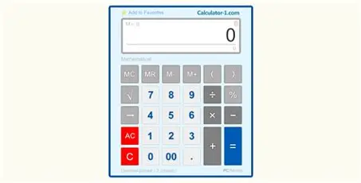

Abrir Preview Interativo ↗
Calculadora em HTML, CSS e JS
Minha primeira calculadora funcional feita à mão. Operações básicas, limpar e apagar dígito. Fundo com gradient e botões estilizados. Foi onde comecei a entender eventos em JavaScript.
HTML5CSS3JavaScript